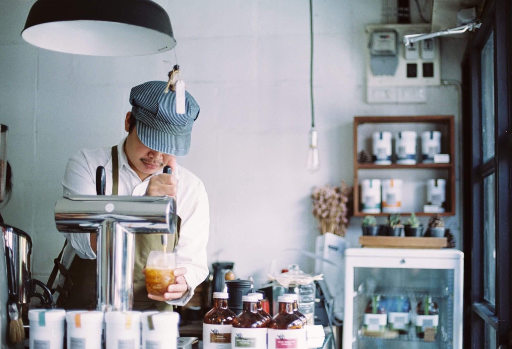

懂得欣赏咖啡的人，才会懂得品味咖啡。正如热爱生活的人，才会懂得珍惜眼前的幸福。因为幸福就是沧桑历尽、苦尽甘来的心境。当咖啡已经成为一种生活的必需品，一种生理上的享受，一种精神上的愉快，用到一种时尚的追求时，这种位居世界三大饮料之列的，曾经充满着神秘色彩的饮料，不再是当年的奢华享受、更不再是某种“腐朽生活的象征”，它变得普通、寻常起来，平平静静地置身于我们繁复的生活中，默默地奉献着自己，隐藏了它的荣耀和辉煌，像我们生活中许许多多熟视无睹的东西一样，人们在享受它的醇厚、浓烈、馥郁的同时，已经无暇去顾及它的身世、它的历史了。

只要用心，你就可以从一杯咖啡里，闻到午后阳光蒸发的熏香，森林清新的气息，或春天果园的甜香……这果味里，经常携带着孕育它生长的产地附近附近的空气——遍植鲜花的威尼斯，栽培出隐约浮泛花香的科纳咖啡；而生长在危地马拉火山腹地的安提瓜咖啡，总带着难以言喻的烟熏味；还有苏门答腊孕育出的厚重浓烈，苦得令人回味的曼特宁……
夏宝咖啡成分有咖啡因特别强烈的苦味，刺激中枢神经系统、心脏和呼吸系统。适量的咖啡因亦可减轻肌肉疲劳，促进消化液分泌。由于它会促进肾脏机能，有利尿作用，帮助体内将多余的钠离子排出体外。咖啡，可以陪伴自己度过许多惬意的时光。

我们的咖啡馆名字叫“夏宝咖啡”，以“这是一个可以舒服休息的地方，不要快节奏”为理念，以都市白领轻奢人群为消费群体，主营手冲单品咖啡。特色是致臻音乐体验（专业级的音响设备）摄影（大画幅人体摄影）一楼咖啡营业，二楼作为摄影、电影发烧友的工作室，会所。咖啡馆会有很多杂书，希望看书的人可以从书中音乐中找到安宁，而不是励志奋斗的书。

网站的素材编辑首先要考虑到网页本身，是为了网页可以更好的表现主题而插入的，只有可以表现主题的才是美的，能够给网页浏览者吸引力的才是美的，一般来说素材关系着网站的好坏，也往往决定着网页的载入速度，我们因该设计出不会引起浏览者烦恼的图片，这个也是涉及到浏览量的关键因素。我们学习了ps制图，知道了基本工具的使用，课堂上老师讲的东西都是有限的，我们应该尽可能的利用课余时间加紧练习，做到触类旁通。

运营模式合作情势：结合我们是商务、休闲咖啡专卖店的特点，建议合作者在高级写字楼、CBD商圈、高科技园区、网吧、车站、电影院、码头或其他有市场空隙之处等地区选址统一装修作风、统一产品;总部供给支撑包含人员培训和产品咖啡豆、茶..

通过对网页设计书籍的翻阅，我学习到了一些关于建设网站和制作网页的知识，在实践查阅资料时，对flash也有所了解。我还了解了一些基础的网络技术。通过学习，我对计算机有了更深层次得到了解，也有了更浓厚的兴趣。尤其是对网页制作的过程与一些技巧手法更有了另外一番了解，对网页制作的基础知识也有了一定的掌握。在这个过程中，我同样认识到网页设计不是一门学科的独秀，而是多种课程的综合，他是、Flash、Fireworks等网页软件的综合应用。

网站的素材编辑首先要考虑到网页本身，是为了网页可以更好的表现主题而插入的，只有可以表现主题的才是美的，能够给网页浏览者吸引力的才是美的，一般来说素材关系着网站的好坏，也往往决定着网页的载入速度，我们因该设计出不会引起浏览者烦恼的图片，这个也是涉及到浏览量的关键因素。我们学习了ps制图，知道了基本工具的使用，课堂上老师讲的东西都是有限的，我们应该尽可能的利用课余时间加紧练习，做到触类旁通。